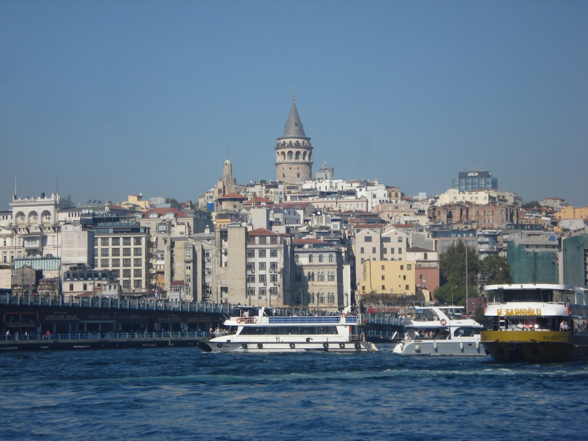

<main>
<head>
    <meta charset="UTF-8">
    <meta name="viewport" content="width=device-width, initial-scale=1.0">
    <title>Seyahatlerim | Gezgin Notları</title>
    <link rel="stylesheet" href="style.css">
</head>
    <h2>Seyahatlerim</h2>

    <article class="kart">
        
        <h3>Galata Kulesi</h3>
        <p>Eminönü'nden Beyoğlu'na giderken birçok yerde onu görebilirsiniz.</p>
    </article>

</main>